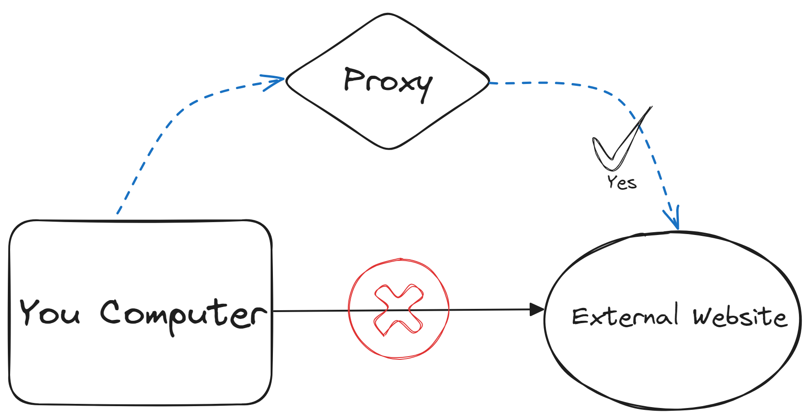
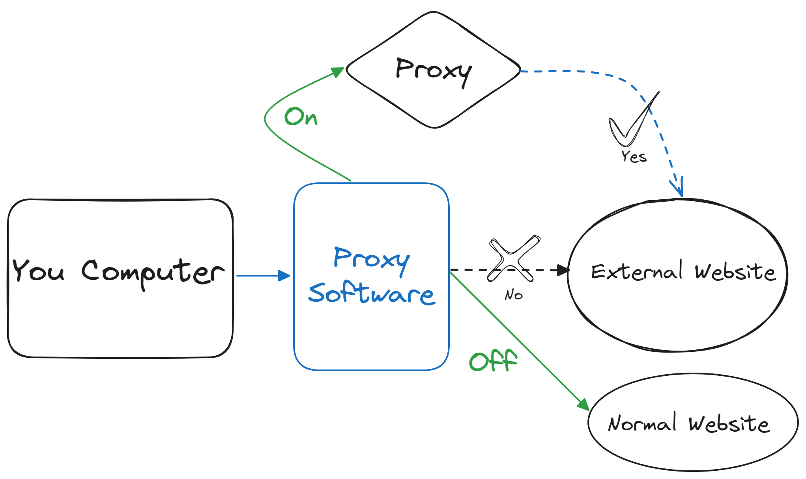
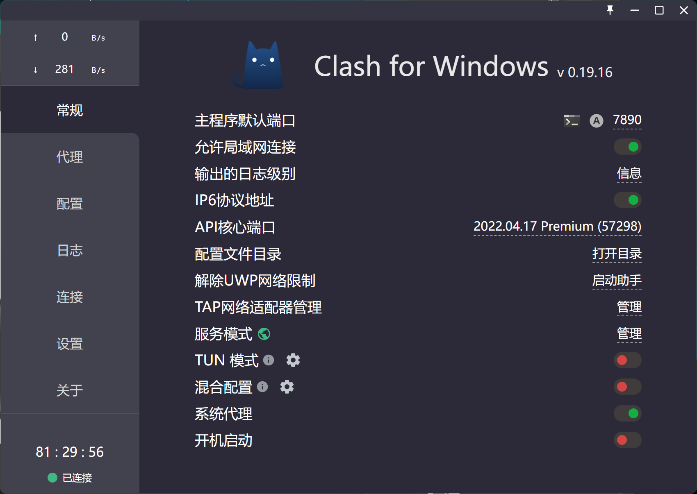
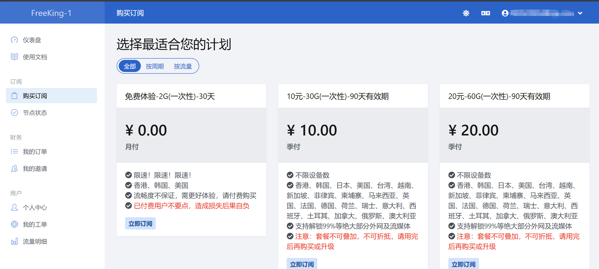
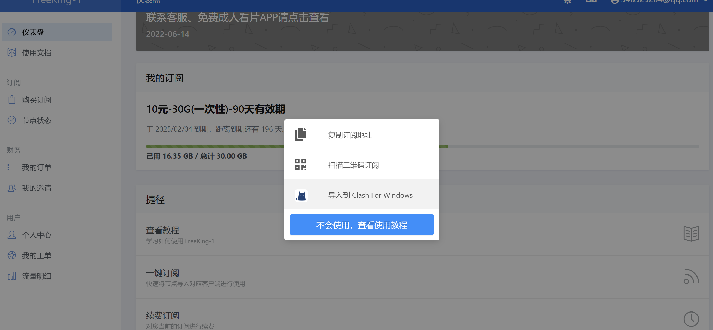
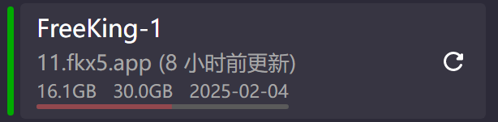
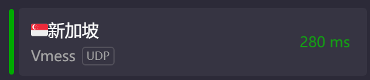
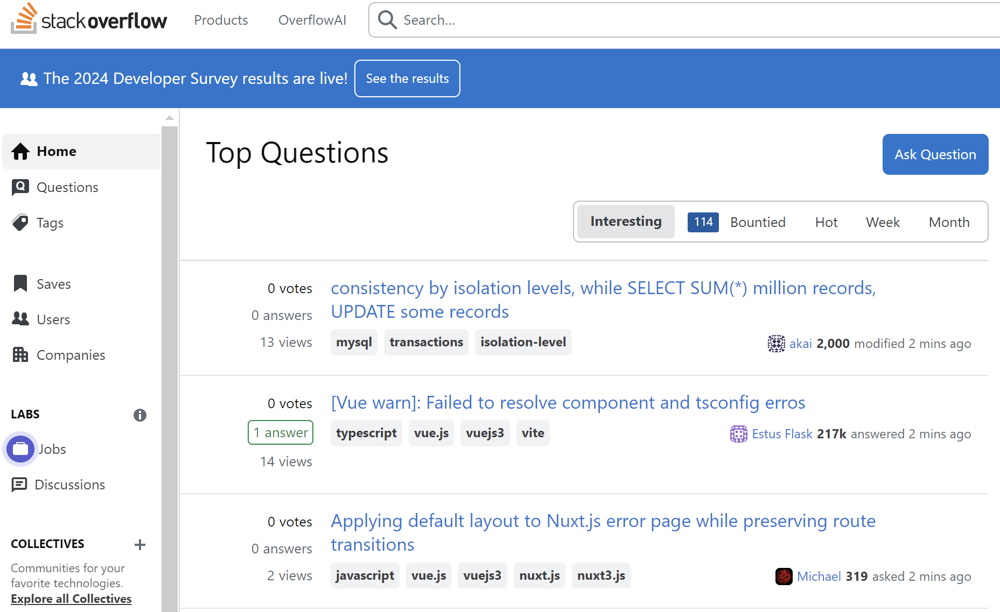

学会科学上网 CS 0.0.0
前言😊：学会科学上网是所有计算机科学专业同学的必备技能，海量资料需要通过无穷无尽的外网来查询；本教程主要是教会大家如何科学上网。
📢Prerequisite：1.一颗完整的电脑 2.带上你的脑子
一、如何正确的科学上网
谈到科学上网，部分同学可能只知道“科学上网”只是为了访问我们访问不到的外部世界，实际上，作为一名优秀的计算机练习生，我我们必须弄清楚什么是科学上网。
I. 什么是科学上网—代理
因为一些众所周知的原因，我们使用国内的宽带服务和通讯，访问不了一些特定的外国网站，比如著名的搜索引擎谷歌。在这种情况下，我们需要一个神通广大的“中间人”——代理（proxy）。只要把我们想访问的网站信息告诉他，他就会帮我们访问，并把获取的信息原封不动（或者有所改动）地传回给我们。这个中间人就叫代理（是不是很像代购商呢？）。只要我们在网络上启用这个代理，就能轻松访问那些我们平常无法访问的网站。
注意你的隐私安全
实际上，代理可以完全看到你的访问信息，同时也可以修改返回给你的信息，为了隐私安全性，要特别注意选取合适的代理提供商。一些打着“免费”旗号的代理，可能正在窃取你的隐私信息。
 一般来说，这种代理的提供商有很多，有些是需要收费的，而有些则是免费的。有些代理很强大，在很多国家都架设了服务器。比如你使用了一个在美国的节点，那么就相当于你找了一个代购商在美国，它可以帮你访问在美国能访问到的网站。
II.如何在你的计算机上使用代理
光有了代购商还不行，代购商必须要把东西送到你手上呀。在这一个过程中，代理软件就起到了作用，代理软件的作用就是在你的电脑上开启代理服务，把你的网络请求发送给代理而不是直接发给目标网址，代理再帮你访问，访问的数据返回给你。就像代购商一样，帮你完成了代购服务，但是最后东西还是到你手上。
一般来说，最流行的代理软件是Clash，这是一个开源的、免费的软件，目前已经在 Github 上跑路了，庆幸的是，我这里还有一份备份，是Windows X86 版本的，随附。

Clash教程
解压我提供的Clash.rar，会得到一个Clash文件夹，点击进入文件夹，打开名为 Clash for Windows.exe 的可执行程序，会出现Clash界面，如下图所示：
安装提示
整个安装过程中，Windows可能会弹出各种各样的安全提醒界面，记得全部点【同意】、【是】

在 常规 界面中，我们需要点亮 允许局域网连接 、IP6协议地址、 服务模式右边的🌏图标，以及系统代理
在 配置 界面中，我们需要下载订阅链接，下一步会详细说明。
完成以上步骤，我们已经完成了Clash软件的配置，是不是十分简单😁
购买代理提供商
实际上，有很多代理提供商，这里选择一个我常用的，网络稳定性比较好但是略贵的代理商freeking，教程如下：
- 在浏览器中打开FreeKing，选择右上角的登录，没有账号就按步骤注册一个。
- 登录成功后，点击最左边的侧边栏中的
购买订阅，然后选择套餐免费体验 - 点击后，在新跳转的界面点击
下单，按步骤完成后点击侧边栏中的仪表盘，返回主界面 - 下拉界面，在
捷径中点击一键订阅，选择导入到 Clash for Windows - 回到你的Clash软件，查看配置中是否新增了
Freeking开头的配置名，单击选中该配置(左边竖条变为绿色)
到这里你已经成功地购买了代理提供商，如果你还想有更好的体验，可以选择付费购买该代理商提供的套餐。



最后一步，开启科学上网
到这里只剩最后一步啦，你就可以开启科学上网了，步骤如下
- 打开你的 Clash 软件，点击左侧侧边栏的
代理，进入代理界面后点击上面的全局，切换到全局界面 - 单击选择一个延迟较小的国家节点（韩国、日本、新加坡等都可），如果都显示超时，可以点击右侧的Wi-Fi图标进行刷新。如果多次刷新仍显示超时，请检查你的网络。
- 点击左侧侧边栏中的
常规，进入常规界面，开启系统代理 - 检查是否成功，请在浏览器中输入
Google.com，如果能够访问，说明你的科学上网成功 - 如果不需要科学上网了，可以关闭系统代理或者Clash软件

注意事项
关闭电脑前需要先把Clash的系统代理或者软件关闭，如果直接关闭电脑，那么下次开机的时候可能出现连不上网的问题，这个时候需要重新打开Clash或者在系统设置里关闭系统代理。
关闭系统代理的步骤（Windows 11系统）
- 右键左下角的 Windows图标 （四个蓝方块，说的就是你），在弹出的菜单栏里选择【设置】
- 在【设置】窗口中找到【网络与Internet】选项，点击进入
- 在【网络与Internet】窗口中找到 【代理】选项，单击进入
- 在【代理】窗口中找到 【使用代理服务器】选项，单击 【编辑】 进入
- 在【编辑】 窗口中找到 【使用代理服务器】，把关掉即可
为什么需要这个步骤（原因）？
如果在关闭电脑前没有关闭Clash的系统代理或软件，那么系统仍然会认为你在使用代理，但负责代理的软件实际上已经关闭了。这就像你去找一个已经关门的代购买东西，不仅代购的东西买不到，连正常的东西也买不到。网络代理也是一样，当你试图通过已关闭的代理服务器访问互联网时，就相当于试图访问一个已经关闭的服务器，结果自然是网络中断。因此，你需要关闭代理服务器，直接使用你的网络来访问正常的网址。
Clash软件则自动化了这一过程，每次打开和关闭时，都会自动管理系统的代理服务器，确保网络连接的正常使用。
二、程序员必备的科学网站
科学网站的重要性
作为一名程序员，在学会了如何进行科学上网后，就要知道有哪些【科学】网站，这些网站往往比国内的网站资源更丰富、功能更强大（最重要的是可能没有烦人的广告😇）
务必遵守法律法规
网络不是法外之地，在使用科学网站时，要自觉遵守相关法律法规，不浏览具有政治问题的网站，不发表政治性评论，不加入具有争议性的群聊和议题，自觉做到爱国、守法。
谷歌浏览器 Chrome
我不仅仅推荐你用谷歌进行学术相关的搜索，更鼓励你使用谷歌浏览器Chrome。以下几个点也许能够成为推荐谷歌浏览器Chrome的原因：
- 速度与性能：Chrome浏览器以其快速的页面加载速度和流畅的性能著称。它使用了高效的V8 JavaScript引擎，并且对HTML5和CSS3等新技术支持良好，能够更快速地渲染网页。
- 用户界面和体验：Chrome没有讨厌的广告，界面十分简洁干爽。
- 开发者工具：Chrome提供了强大的开发者工具（DevTools），方便前端开发者进行调试、性能分析、查看DOM结构和网络请求等。

Edge—另一优秀的浏览器
除了Google旗下的Chrome，Microsoft旗下的Edge浏览器也是一款优秀的浏览器。同样没有广告、纯净的Edge为我们提供了新的人工智能助手——Bing。类似于ChatGPT，Bing可以支持实时问答，检索需要的资料等功能。
如果要使用智能助手Bing，请确保您已经开启了代理服务。
Stack Overflow ——优秀的编程问答社区
与某个C开头N结尾的网站类似，Stack Overflow 是一款编程相关的问答网站。可以这么说，Stack Overflow 是全球最大的程序员交流网站之一，在这里你几乎可以找到所有相关的技术性问题，更重要的是，没有讨厌的弹窗和广告。相信这里会是你运用检索能力解决编程问题的第一站。

Github
相信不需要我进行介绍了，GitHub 是一个面向软件开发人员的代码托管平台，广泛用于版本控制和协作开发。自2008年推出以来，它已成为全球最大的开源软件项目托管平台。你可以使用Github：
- 进行版本控制和代码托管：GitHub基于Git版本控制系统，允许开发人员跟踪和管理代码的变化。每次提交代码的更改都会被记录，开发人员可以查看历史版本、回滚到之前的版本，或比较不同版本之间的差异。开发人员可以在GitHub上创建代码仓库（repository），托管他们的项目。仓库可以是公共的（任何人都可以查看和贡献）或私有的（只有受邀人员可以访问）。
- 开源社区：GitHub是开源社区的重要平台，许多知名的开源项目都托管在这里。用户可以浏览、克隆和贡献开源项目，参与社区讨论，学习和分享编程知识。
Git—版本控制系统
Git是全球知名的代码版本控制系统。如果您还不了解Git，可以点击此处学习Git相关的基本知识。